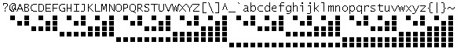

Sixel is a graphics format made of 64 patterns six pixels high and one wide.
An image is encoded by breaking up the bitmap into a series of 6-pixel high strips that is then converted into a single ASCII character, offset by 0x3f so that the first sixel is encoded as ?. This ensures that the sixels remain within the printable character range of the ASCII character set.
| Enter Sixels Mode | DCS | 0x90 | Start sequence |
|---|---|---|---|
| q | 0x71 | End optional parameters | |
| Sixels Body | ! | 0x21 | RLE Encoding |
| $ | 0x24 | Beginning of current line | |
| - | 0x2d | Beginning of next line | |
| ?~ | 0x3x-0x7f | Sixels Tiles | |
| Leave Sixels Mode | ST | 0x9c | Terminate sequence |
RLE Encoding
The ! character, followed by a string of decimal digit characters, preceding any valid sixel-data character, causes that sixel to be repeated the number of times represented by the decimal string. RLE Encoding shouldn't be used for less than 4 repetitions. For example, seven repetitions of the sixel represented by the letter "A" could be transmitted either as AAAAAAA or !7A.
Tiles
The pixels can be read as a binary number, with the top pixel being the least significant bit. Add the value of the pixels together, which gives a number between 0 and 63 inclusive. This is converted to a character code by adding 63, which is the code of the question mark character, ?. The correspondence between each possible combination of six pixels and its sixel character is illustrated below.
Uxntal Implementation
@draw-sixels ( str* -- )
[ LIT2 02 -Screen/auto ] DEO
.Screen/x DEI2 ,&anchor STR2
&w ( -- )
LDAk [ LIT "- ] NEQ ?{
[ LIT2 &anchor $2 ] .Screen/x DEO2
.Screen/y DEI2k #0006 ADD2 ROT DEO2
!& }
LDAk [ LIT "? ] SUB ,&t STR
#0600
&l ( -- )
[ LIT &t $1 ] OVR SFT #01 AND .Screen/pixel DEO
INC GTHk ?&l
POP2
( | advance )
.Screen/x DEI2k INC2 ROT DEO2
.Screen/y DEI2k #0006 SUB2 ROT DEO2
& INC2 LDAk ?&w
POP2 JMP2r
@sample [ "???owYn||~ywo??-?IRJaVNn^NVbJRI $1 ]
- Sixels Viewer
- Sixels Converter, convert icn to sixel
- VT320 Soft Character Sets
incoming gly format